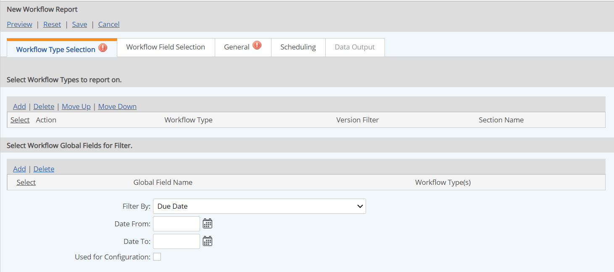
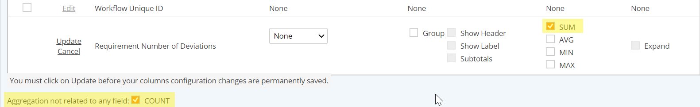

Workflow Reports report on the status, history, and details of workflows. The report may include:
In addition, the workflow report will make use of advanced filtering to report on specific workflow versions. You can report on multiple versions of a workflow simultaneously. The workflow report will always include most recent version if greater than (> or >=) filters are used.
Enhanced report filtering uses the following operators to select workflow versions: equals (=), greater than (>), greater than or equal to (>=), less than (<), less than or equal to (<=).
To create a Workflow Report:
On the Workflow Type Selection tab:
Select the Workflow Type to report on. Only one Workflow Type is allowed per report.
Date Filter Options: You may add any global Date/Time fields in the workflow to the date filter parameters that will be available when running the report. Add the workflow type first, then select the field in the Workflow Global Fields filter section. Select the field for the default date filter to use at run time. The standard workflow fields Due Date and Creation Date are available along with any workflow fields added.

If the workflow is associated with system model objects, you may select the objects you want to filter for (optional). Or check to include the object selector on the Run Report page.
On the Workflow Field Selection tab, click Add Field to select the fields you want to include on the report.
In the selection window, use the Search to filter for field type. Usually you will want to include the Workflow (generic fields) and Workflow Step fields (specific to each step and its form fields). However, you may also filter to include property fields for any associated objects (both standard and custom fields).
Click the Edit link for a field to see other options, including sorting and grouping options. You may also include aggregate values for numeric fields.
Aggregate values that are not used for grouping (Group is unchecked) may also be used for saving data to parameters. When an aggregate is selected, the field will become available for selection on the Data Output tab.
Reorder fields by selecting and click Move Up or Move Down. Remove any fields that you don’t want in the report by clicking Delete.
Check the COUNT box at the bottom to output a total count of the number of workflows included in the report.
Refine search by workflow status: Check one or more desired statuses to filter workflows by status.
You may also refine data results by selecting a field and entering a value to filter for (same as other report types).
On the General tab, enter Report Name and optional description, header and footer. Choose the Output Format.
Automatic report scheduling and data output are also available.
Scheduling: See Schedule Automatic Report Execution.
Data Output: Aggregate values for any numeric field that is not used for grouping may be saved to parameters. When an aggregate is selected on the Workflow Field Selection tab, the field will become available on the Data Output tab. Also available is the COUNT aggregate, which is not dependent on any field. Select this value below the workflow field list to include it in the possible fields for data output. See also: Save Report Data to Parameters.

If a user does not have Unrestricted Report permissions or Manage Workflow rights, the following permissions may be required: